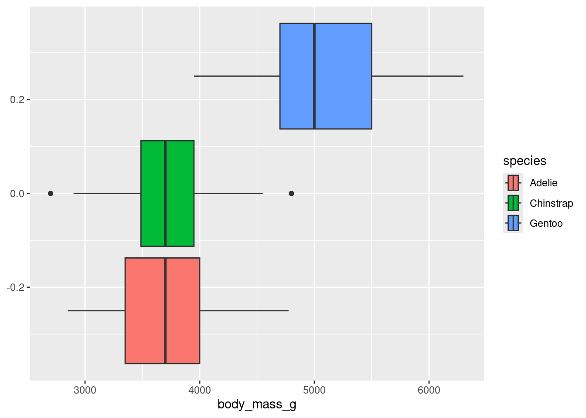
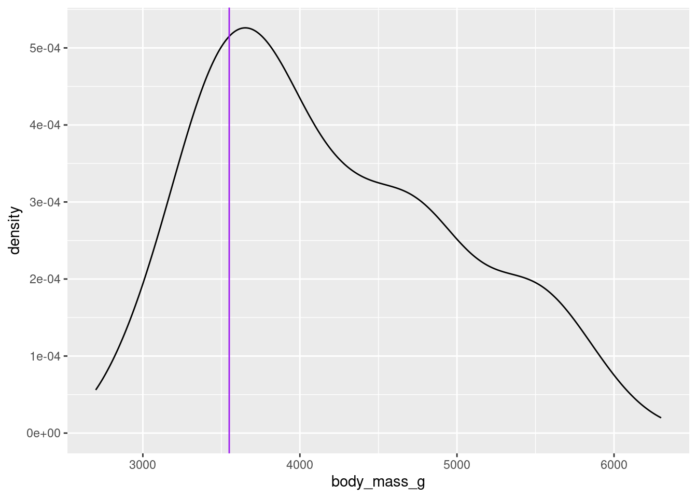

Warning: Removed 2 rows containing non-finite outside the scale range
(`stat_boxplot()`).

Measures of center
mean: mean()
median: median()
# When using summarize functions like n() and mean() the words to the left of the = are the column headers.summarize(.data = penguins,number_of_penguins =n(),mean_mass =mean(body_mass_g, na.rm =TRUE),median_mass =median(body_mass_g, na.rm =TRUE) )
Most summary information can be found with the fivnum() or summary() function.
# This is just the five number summaryfive_number_pengiuns <-fivenum(penguins$body_mass_g)five_number_pengiuns
[1] 2700 3550 4050 4750 6300
#This is the five number plus summarysummary(penguins$body_mass_g)
Min. 1st Qu. Median Mean 3rd Qu. Max. NA's
2700 3550 4050 4202 4750 6300 2
# This is how you can get the exact quantile. quantile(x= penguins$body_mass_g, probs =c(0.25,0.5), na.rm=TRUE)
25% 50%
3550 4050
Graphed Quantiles
# Note the vertical line showing the 25th percentile. ggplot(data = penguins, aes(x = body_mass_g)) +geom_density()+geom_vline(xintercept =3550, color ="purple")
Warning: Removed 2 rows containing non-finite outside the scale range
(`stat_density()`).

Your turn
Summarize the distribution of the height variable in the starwars data frame by computing:
the number of observations
the mean
the standard deviation
Find the 80th quantile for the height variable in the starwars data.
Answer here.
Outliers
Along a number line to locate outliers we first calculate the two bounds
\[
L = Q1 - 1.5 \times IQR \\
U = Q3 + 1.5 \times IQR
\]
Any values outside that range are considered outliers.
Let’s do this with penguins mass.
Calculate outlier bounds in R
# This is the IQR of the penguin's massiqr_mass <-IQR(x= penguins$body_mass_g, na.rm =TRUE)q1 <- five_number_pengiuns[2]q3 <- five_number_pengiuns[4]# This is the lower boundq1 -1.5*iqr_mass
[1] 1750
# This is the upper boundq3 +1.5*iqr_mass
[1] 6550
min(penguins$body_mass_g, na.rm =TRUE)
[1] 2700
max(penguins$body_mass_g, na.rm =TRUE)
[1] 6300
Your turn
Make a boxplot of mass of the starwars characters
Calculate the outlier range (by hand or in the computer).